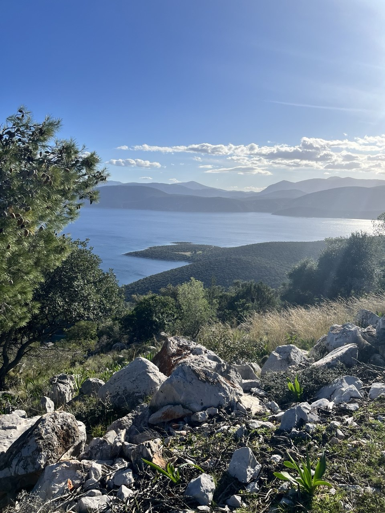

Лаборатория живого
опыта
Чашка кофе и Минотавр
09–16 октября 2026. /Пелопоннес
7 дней особой роскоши:
- живая беседа на глубокие и важные темы;
- новые практики чувствования тела;
- время для осмысления прожитого.
Это время другого измерения, где можно наконец заблудиться в собственном лабиринте — и выйти оттуда обновленным.
Насыщенная смыслом беседа
Дарья Зиборова — культуролог, египтолог, философ, Автор концепции осеннего сезона Лаборатории.
Дарья развернет перед нами палитру мифов и архетипов. Она задаст глубокий экзистенциальный вопрос «Кто Я?» и через разбор «Пути героини» направит наш взгляд внутрь себя.
Поможет связать личные сюжеты с сюжетами Вечности в единый узор.
Осознанная чувствительность
Таня Апет — психолог, ландшафтный аналитик, фасилитатор по методике Walk&Talk.
Таня — наш проводник в понимание тела: она сонастроит нас с ритмом природы и предложит новые инструменты контакта с собой. Через движение и диалог с пространством бескрайняя морская гладь и оливковые рощи Пелопоннеса станут живой метафорой наших личных переживаний и историй.
Общение по принципу золотого сечения
Как в золотом сечении, каждая часть гармонично связана с целым — так и в направленном разговоре слова не рассыпаются впустую, а становятся элементами единого узора.
Мы говорим, делимся инсайтами и переживаниями, а Дарья и Таня, как опытные Навигаторы, удерживают вектор беседы, помогая связывать разрозненные эпизоды дня в общую, осмысленную картину.

Приглашаем вас на побережье Пелопоннеса
Вас ждут практики, культура, природа и незабываемые впечатления.
Проект только начинает свою историю, и нам бесконечно важно, с кем именно она будет написана.
Для первого круга стоимость составляет:
Это наше личное приглашение всем, кто разделяет наш путь познания, эту особую любовь к глубоким размышлениям и подлинному проживанию мгновений.
Мы будем счастливы разделить этот опыт с Вами и пройти его вместе под шум волн, среди оливковых рощ в духе живой, античной беседы.